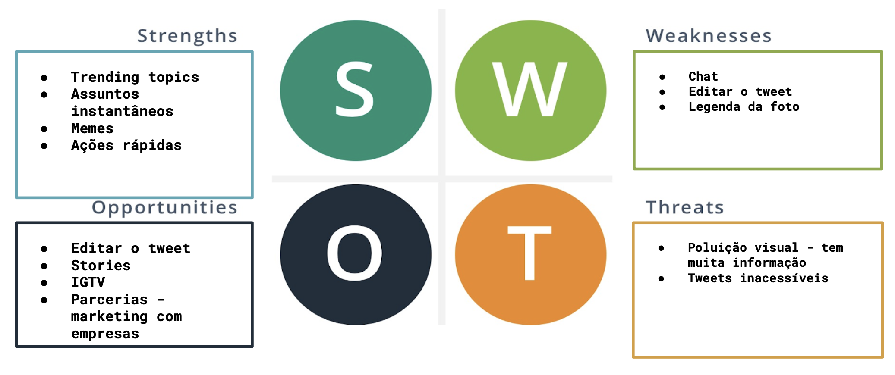

Sobre a análise da matriz SWOT
A matriz SWOT representa o resultado das percepções sobre os ambientes em que a organização/empresa/aplicação está inserida.
A percepção de que para elaborar uma boa estratégia requer muito conhecimento e compreensão do negócio, dos ambientes interno e externo em que a organização está inserida, é motivo suficiente para o uso da matriz SWOT, que foi estruturada em algum momento das décadas de 1950 e 1960, contribuindo muito para a disseminação do uso do planejamento estratégico.
Assim, as características intrínsecas da organização, suas forças (Strengths) e fraquezas (Weaknesses), e as características extrínsecas dela, oportunidades (Opportunities) e ameaças (Threats) do ambiente de fora da organização, formam o fundamento da matriz.
Adaptado de : A Look into the SWOT Analysis as a tool of Strategic Planning. FERNANDES, Djair Roberto. UNOPAR Cient., Ciênc. Juríd. Empres., Londrina, v.13, n.2, p.57-68, Set. 2012.
Para o Twitter :

Legenda: - Strengths - forças ; - Weaknesses - fraquezas ; - Opportunities - oportunidades ; - Threats - ameaças
Versionamento de edições desta página
| Data | Autor | Descrição | Versão |
|---|---|---|---|
| 11/09/2019 | Erick Giffoni | Criação e edição inicial da página. | 0.1 |